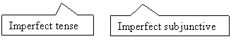
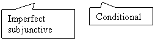

Il congiuntivo (imperfetto)
Il congiuntivo passato is a compound tense. It's formed with the present subjunctive of the auxiliary verb avere or essere and the past participle of the acting verb.
 |
Verbs that take avere or essere for il passato prossimo will be the same for the construction of il congiuntivo passato.
In general, transitive verbs are conjugated with avere, and intransitive verbs, especially those expressing motion, are conjugated with the auxiliary essere.
|
Il congiuntivo passato con avere
Regular verbs
| I pronomi personali |
parlare |
scrivere |
partire |
finire |
| io |
parl assi |
scriv essi |
part issi |
fin issi |
| tu |
parl assi |
scriv essi |
part issi |
fin issi |
| lui/lei/Lei |
parl asse |
scriv esse |
part isse |
fin isse |
| noi |
parl assimo |
scriv essimo |
part issimo |
fin issimo |
| voi |
parl aste |
scriv este |
part iste |
fin iste |
| loro/Loro |
parl assero |
scriv essero |
part issero |
fin issero |
Common irregular verbs
| I pronomi personali |
avere |
andare |
dare |
essere |
fare |
potere |
stare |
| io |
avessi |
andassi |
dessi |
fossi |
facessi |
potessi |
stessi |
| tu |
avessi |
andassi |
dessi |
fossi |
facessi |
potessi |
stessi |
| lui/lei/Lei |
avesse |
andasse |
desse |
fosse |
facesse |
potesse |
stesse |
| noi |
avessimo |
andassimo |
dessimo |
fossimo |
facessimo |
potessimo |
stessimo |
| voi |
aveste |
andaste |
deste |
foste |
faceste |
poteste |
steste |
| loro/Loro |
avessero |
andassero |
dessero |
fossero |
facessero |
potessero |
stessero |
Il congiuntivo imperfetto is used when the verb in the dependent clause is in a past tense. For example:
I genitori volevano che i figli finissero i compiti

Il congiuntivo imperfetto is used when the verb in the dependent clause is in the conditional.
Se mi incontrassi, ti inviterei a pranzo.

(The verb would invite is conditional tense. The verb met in the dependent clause, needs to be in the imperfect subjunctive.)